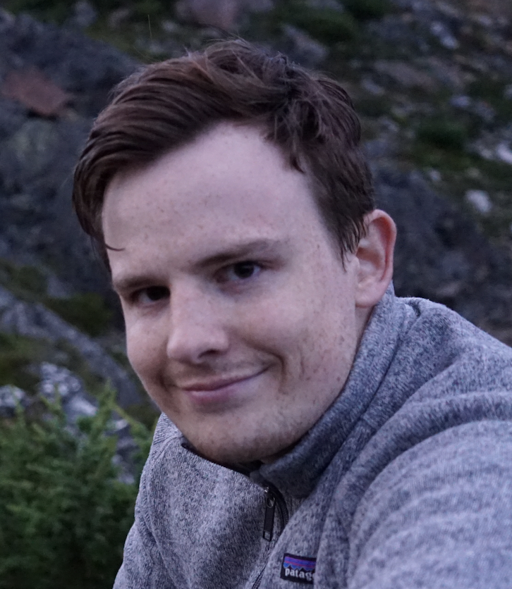

gavin_wiese@outlook.com
mobile: +1 (604) 365-2825
Nationality: Canadian
# Control Systems Engineer
## Executive Summary
- 5+ years of industrial control system experience for the pharmaceutical industry.
- Designed, developed and commissioned equipment within a ISO9001 certified QMS system.
- Proficient in OT networking, cybersecurity, and systems administration
- Proficient in other coding languages such as .NET, python, and visual basic.
## Working Experience
### Cytiva Life Sciences
#### Lead Control Systems Engineer - Sustaining (2021/07 - Present)
- Held weekly meetings with service and manufacturing to collect bugs from external and internal customers. Then triaged those bugs based on risk.
- Participated in the planning of sustaining activities once a month with a product planning group to determine a strategic product roadmap utilizing risk and VOC to determine priority.
- Lead a team of cross-functional engineers following an agile process to develop and deploy work items as determined by the product roadmap.
- Coordinated with other engineering disciplines to determine field system strategy for hardware changes and align hardware releases with software dependencies.
- Managed the configuration and deployment of firmware and operating systems to ensure robust product security using microsoft deployment toolkit.
#### Control Systems Engineer - Integration (2019/01 - 2021/07)
- Configured a machine from scratch that includes more then 100 IO points, 2 robots, and 4 servos to an operational state ready for customer sale factory activities.
- Performed commissioning and factory acceptance testing of machines.
- Developed setup documentation to reduce integration time by >25% and reduce commissioning deviations by over 50%
- Traveled to customer sites to perform site commissioning, operator training, and format teaching.
- Provided level 2 remote technical support to customers. Documented findings and provided ticket history to customer as well as internal development team to feed into sustaining funnel.
### STEMCELL Technologies
#### Instrumentation Designer (2018/05 - 2018/12)
- Proto-typed mechanical assemblies for a vision inspection system of petri dishes.
- Proto-typed a cell separation device for different tissue sample types.
- Proto-typed an add-on extension to a under-counter lab fridge to allow reagent pass-through.
- 3D printed various mechanical assemblies as required for duties as well as fulfilling 3d printing requests from other teams.
## Education & Qualifications
- Engineer in Training, EGBC (2019 - Present)
- BASc. Mechatronics Simon Fraser University (2012 - 2019)
## Misc. Information
- Languages: English (Native)
- Volunteering: BCMC Trail Maintenance (2018 - Current)
- Hobbies: Mountaineering, Climbing, Backpacking, Snowboarding
- Interests: Cats, Reading, Photography